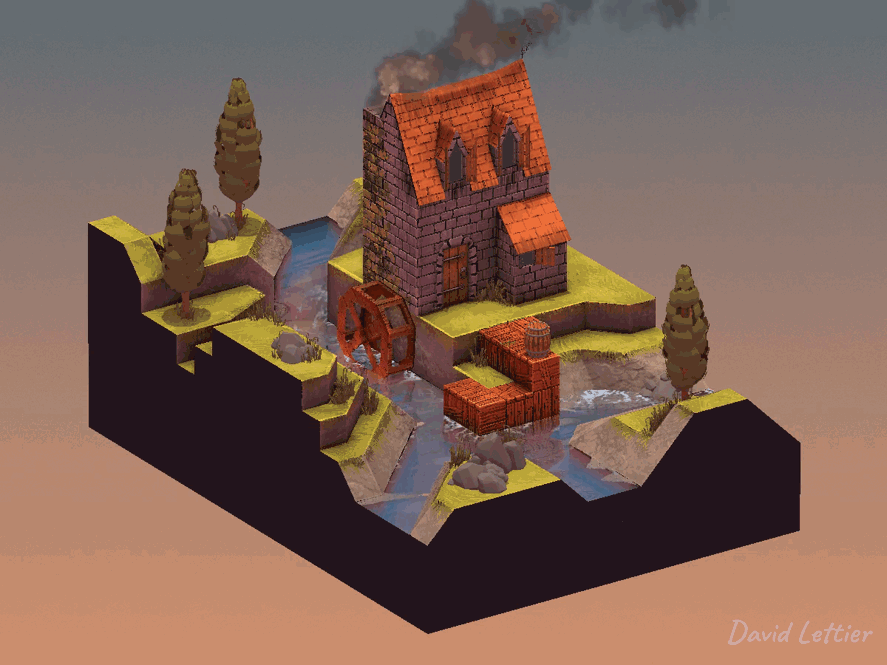
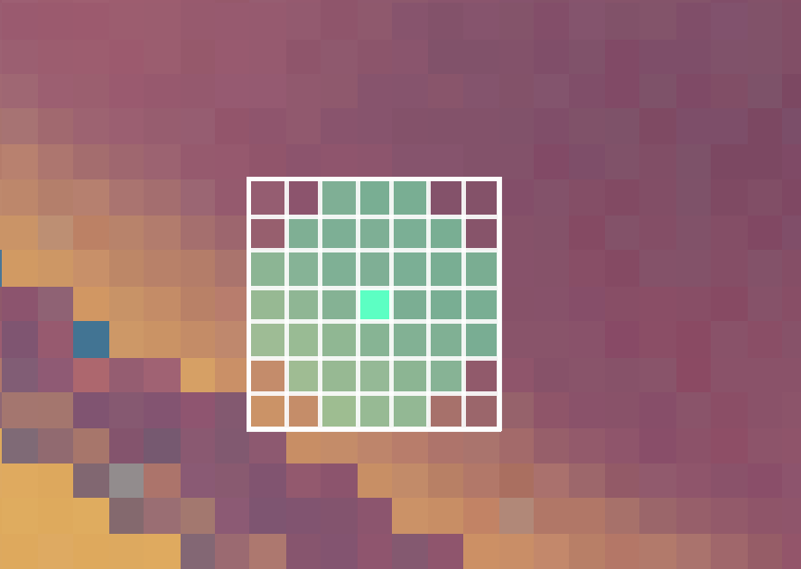

膨胀操作会扩大图像中亮度较高的区域，同时收缩图像中较暗的区域，
从而产生一种“膨胀柔软”的外观。
你可以使用膨胀来实现光晕 / 泛光效果，或者为你的 景深效果 添加散景。
// ...
int size = int(parameters.x);
float separation = parameters.y;
float minThreshold = 0.1;
float maxThreshold = 0.3;
// ...size 和 separation
参数控制图像的膨胀程度。
更大的 size 会带来更明显的膨胀效果，但性能开销更大。
更大的 separation
也会扩大膨胀区域，但会降低图像质量。
minThreshold 和 maxThreshold
控制图像中哪些部分会被膨胀。
// ...
vec2 texSize = textureSize(colorTexture, 0).xy;
vec2 fragCoord = gl_FragCoord.xy;
fragColor = texture(colorTexture, fragCoord / texSize);
// ...采样当前片元位置的颜色。
// ...
float mx = 0.0;
vec4 cmx = fragColor;
for (int i = -size; i <= size; ++i) {
for (int j = -size; j <= size; ++j) {
// ...
}
}
// ...在当前片元位置周围建立一个 size × size
的窗口进行遍历。
在遍历过程中，找出周围片元中亮度最高的颜色。

// ...
// For a rectangular shape.
//if (false);
// For a diamond shape;
//if (!(abs(i) <= size - abs(j))) { continue; }
// For a circular shape.
if (!(distance(vec2(i, j), vec2(0, 0)) <= size)) { continue; }
// ...窗口的形状会影响图像膨胀区域的形状。
如果使用矩形形状，则处理窗口内的所有片元；
若使用其他形状（如菱形或圆形），则跳过不在该形状内的片元。
// ...
vec4 c =
texture
( colorTexture
, ( gl_FragCoord.xy
+ (vec2(i, j) * separation)
)
/ texSize
);
// ...从周围窗口中采样片元颜色。
// ...
float mxt = dot(c.rgb, vec3(0.21, 0.72, 0.07));
// ...将采样颜色转换为灰度值（亮度值）。
// ...
if (mxt > mx) {
mx = mxt;
cmx = c;
}
// ...如果当前灰度值大于之前记录的最大值，则更新最大灰度值和对应颜色。
// ...
fragColor.rgb =
mix
( fragColor.rgb
, cmx.rgb
, smoothstep(minThreshold, maxThreshold, mx)
);
// ...最终的片元颜色是原始颜色与亮度最高颜色之间的混合结果。
如果最大灰度值小于 minThreshold，颜色保持不变；
如果大于 maxThreshold，颜色被替换为亮度最高的颜色；
如果介于两者之间，则按 smoothstep 插值进行混合。
(C) 2020 David Lettier
lettier.com